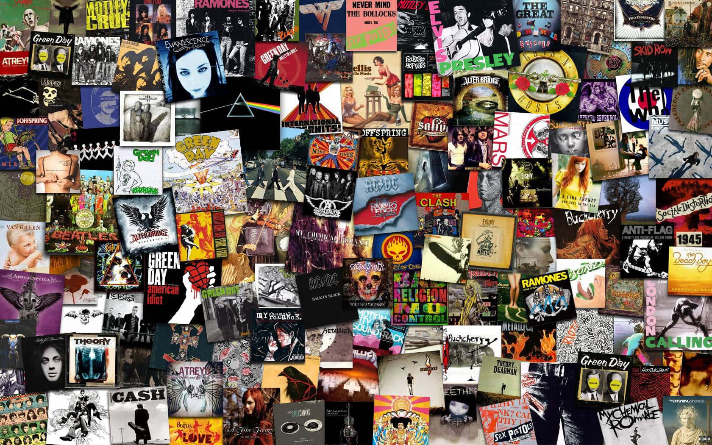

EN DESARROLLO

Soy Thiago Grillo, y me considero un fuerte melómano que escucha muchos discos nuevos por semana. Consideré crear un espacio para compartir mis escuchas y a su vez me sirva como bitácora personal.
Comencé a coleccionar discos a inicios del 2024. Siempre quise hacerlo, pero no fue hasta un viaje de vacaciones, que un disco me acompañó durante el viaje, que lo compré en CD. Y desde ahí, mi colección no deja de aumentar. Ese primer CD fue Bocanada de Cerati.
Te invito a explorar mis reseñas, conocer nueva música y sobre todo encontrar qué escuchar cuando no sepas qué, acá en Obínion.